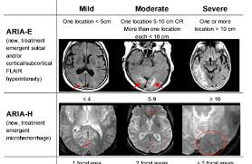

Video Links
🐰 Alzheimer’s Disease Infusions
💗 **Goal:** Help trainees understand how these therapies are used in practice and what must be checked at every visit.
Before documenting these patients Review the EPIC setup, note-writing workflow, and example completed clinic note before documenting patients receiving anti-amyloid therapy. Open EPIC Documentation Guide
🧠 What are AD infusions?
AD infusions are IV anti-amyloid monoclonal antibodies intended to reduce amyloid plaque burden in the brain.
They are:
- Used in MCI due to AD
- Administered on a regular infusion schedule
- Closely monitored due to potential adverse effects
💉 Common Therapies
Examples you may see that we use in clinic:
📋 What to Check Every Visit
- MoCa and FAQ completed every 5-6 Months (Please do this!!!)
- Current infusion number
- Either the patient will know AND
- Please ask staff to contact PA Money on what infusion the patient is currently on
- Last infusion date
- Any missed or delayed doses
- Recent MRI results
- New neurologic symptoms
- Anticoagulant or antiplatelet use
⚠️ ARIA (Amyloid-Related Imaging Abnormalities)

ARIA-E (Edema)
- Cerebral edema
- May be asymptomatic or symptomatic
ARIA-H (Hemorrhage)
- Microhemorrhages or superficial siderosis
- Increased risk with anticoagulation
💗 **Always ask about:** headaches, confusion, dizziness, visual changes, nausea, gait changes, or focal neurologic symptoms.
🧠 MRI & Amyloid PET Monitoring
- MRIs are performed at scheduled intervals
- Imaging determines whether infusions continue, pause, or stop
- MRI findings may guide dose or schedule changes
- Kisunla Monitoring for ARIA:
- Obtain a recent baseline brain magnetic resonance imaging (MRI) prior to initiating treatment with KISUNLA. Obtain an MRI prior to the 2nd, 3rd, 4th, and 7th infusions. If a patient experiences symptoms suggestive of ARIA, clinical evaluation should be performed, including an MRI if indicated.
- Lequembi Monitoring for ARIA:
- Obtain a recent baseline brain magnetic resonance imaging (MRI) prior to initiating treatment with LEQEMBI. Obtain an MRI prior to the 3rd, 5th, 7th, and 14th infusions. In general, the MRI should be performed within approximately one week before the scheduled infusion of LEQEMBI and reviewed prior to proceeding with the infusion. If a patient experiences symptoms suggestive of ARIA, clinical evaluation should be performed, including an MRI if indicated.
- For both amyloid PET scans will be scheduled prior to infusions, 12 months and 18 months to assess pt Centiloid Value before and after to assess efficacy of treatment and whether pt can stop treatment.
📝 Documentation Tips
Include:
- Infusion number and tolerance
- MRI date and impression
- Presence or absence of ARIA symptoms
- Any ED visits or hospitalizations
- Counseling provided
👥 Patient & Caregiver Counseling
Key points:
- Not a cure
- Intended to slow disease progression
- Safety monitoring is essential
- New neurologic symptoms should prompt immediate contact
- Don’t forget to do MoCa and FAQ Every 5-6 Months
- Pt will Return to clinic every 5 months
🐰 Key Takeaways
💗 Safety and monitoring matter more than speed.
- Know the infusion number
- Ask ARIA questions every visit
- Document MRI status
- Involve caregivers
🐾 When unsure, escalate questions—infusion safety comes first and please ask staff if confused.